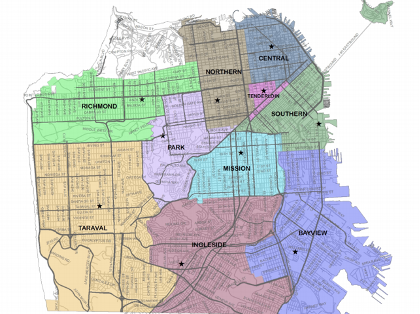

Caso de Estudio Crimenes en San Francisco
Posted on mar. 05 Diciembre 2023 in Caso de Estudio
Clasificación de crímenes de San Francisco
Contexto
En esta ocasión, se estará aplicando modelos de Machine Learning a un dataset de incidentes relacionados a la actividad criminal en la ciudad estadounidense de San Francisco con el objetivo de predecir la categoría del crimen que se produjo en base a datos sobre el mismo. Estos mencionados datos son registros de crímenes ocurridos en la ciudad desde el 01/01/2003 hasta el 13/05/2015. Este problema es de tipo clasificación múltiple, pues hay muchas categorías de crímenes.
La clasificación de crímenes es el proceso de categorizar y organizar diferentes tipos de delitos en función de ciertos criterios. La clasificación puede ser llevada a cabo por fuerzas del orden, analistas de datos, investigadores criminales, entre otros profesionales en el campo de la criminología y la justicia.
En muchos sistemas judiciales, los crímenes se clasifican en diversas categorías con el fin de facilitar la gestión y el análisis de la información.
Es una actividad crucial para entender patrones, asignar recursos de manera eficiente y tomar decisiones informadas sobre estrategias de aplicación de la ley de políticas de seguridad pública. Además, ayuda a mantener registros precisos de las actividades criminales, lo que puede ser útil para la prevención del delito y la resolución de casos.
Para entender más sobre el contexto de los datos, es importante saber de la ciudad de donde fueron tomados. San Francisco es una ciudad ubicada en la península homónima, en el estado de California, Estados Unidos. Según un censo realizado en 2022, tiene una población de aproximadamente 800.000 habitantes, y de 4.200.000 habitantes si cuenta el área metropolitana de San Francisco-Oakland-Fremont.
La economía de la ciudad ha estado históricamente ligada al sector tecnológico y financiero, siendo conocida como un centro global de innovación y emprendimiento.
En lo que refiere a la situación respecto a la actividad criminal en San Francisco, desde los comienzos del siglo XXI hasta ahora, la ciudad ha enfrentado desafíos significativos relacionados con las personas sin hogar, lo que ha llevado a problemas adicionales como el consumo de drogas en espacios públicos y delitos menores. Por otro lado, según los informes de la SFPD (Departamento Policial de San Francisco), el área de The Tenderloin es la zona con el índice de criminalidad más alto de la ciudad, con un 70% de los crímenes violentos y ¼ de los homicidios ocurriendo en esta zona.
Fuentes:
- https://open.lib.umn.edu/criminallaw/chapter/1-4-classification-of-crimes/
- https://es.wikipedia.org/wiki/San_Francisco_(California)
- https://en.wikipedia.org/wiki/Crime_in_San_Francisco
- https://www.kaggle.com/competitions/sf-crime/data
- https://www.neighborhoodscout.com/ca/san-francisco/crime
- https://data.sfgov.org/Public-Safety/Police-Department-Incident-Reports-Historical-2003/tmnf-yvry
Detalles del Conjunto de Datos
Como se mencionó antes, se estará trabajando con datos históricos de incidentes criminales en la ciudad de San Francisco, California, que datan del 01/01/2003 hasta el 13/05/2015.
Los datos son provistos por la SFPD, y puestos para acceso público por el gobierno de la ciudad a través del sitio web del organismo.
Los datos a los que se pueden acceder desde la página del gobierno son hasta el 13/05/2023, y el archivo Excel cuenta con 2,13 millones de incidentes registrados.
Sin embargo, por limitaciones de hardware y tiempo, este trabajo se ceñirá al dataset provisto en la página de Kaggle, que cuenta con 878049 incidentes en el dataset de entrenamiento, otros 884262 en el dataset de test.
El dataset de entrenamiento cuenta con 9 atributos, los cuales son:
- Dates: timestamp que indica cuando ocurrió el incidente criminal (Timestamp de fecha y hora).
- Category: categoría del incidente (Texto) (Variable Objetivo de la predicción).
- Descript: descripción del crimen (Texto).
- DayOfWeek: día de la semana en el que ocurrió (Texto).
- PdDistrict: nombre del distrito policial donde ocurrió (Texto).
- Resolution: resolución del crimen (Texto).
- Address: dirección aproximada del incidente (Texto).
- X: longitud donde se reportó el crimen (Numérico).
- Y: latitud donde se reportó el crimen (Numérico).
Todos los atributos están presentes también en el dataset de test, excepto los de Category, Descript y Resolution. Además, el dataset de test presenta un atributo Id que se asigna a cada incidente.
Los datos provenientes de la SFPD alternan las semanas para los datasets de entrenamiento y test, es decir, las filas pares van para el dataset de test, y las impares para el de entrenamiento.

Figura 1

Figura 2
Como se puede observar en la Figura 2, el dataset está extremadamente sesgado, lo que significará un problema para la precisión de los modelos de predicción, además, se aprecia claramente la categoría de crimen más popular: LARCENY/THEFT. Existen 39 categorías de crímenes, por lo que también el objetivo inicial es superar el porcentaje de asignar una categoría al azar de 100/39 (2,56%).
En la figura 1 se puede apreciar un mapa de los 10 departamentos policiales de San Francisco y sus jurisdicciones.

Figura 4
La figura 4, por otro lado, nos muestra una distribución relativamente equitativa entre todos los años en los que se recopiló información, excepto en 2015, donde claramente no se terminó el proceso de recopilación.

Figura 5
En la figura 5, se observa la distribución de crímenes por mes. De esta gráfica, se puede concluir, aparte de que el mes con mayor cantidad de crímenes es agosto, que se tiene una distribución bastante equilibrada de crímenes por mes.

Figura 6
Por lo contrario, la figura 6 muestra una distribución de crímenes por departamento de policía algo sesgada, siendo la diferencia entre la que tiene más crímenes (Southern) y la que menos (Richmond) bastante significativa.
Un dato que sorprende es que Tenderloin es la 6ta sección con más crímenes, siendo, con bastante diferencia, la sección policial de menor área(m2) (observar figura 1), lo que indica que es el distrito policial con más crímenes por m2.

Figura 7
Mientras tanto, la figura 7 nos muestra que la distribución de crímenes por día de semana está muy equilibrada.
El día con mayor cantidad de crímenes es uno no muy sorprendente, el viernes. Este es el día en que usualmente la gente sale de sus hogares para distenderse luego de una semana de trabajo.

Figura 8
La figura 8, por otro lado, nos muestra una relación muy interesante en cuanto a relación de la hora del día con la cantidad de crímenes que se realizan.
Como se puede apreciar, se muestra que el horario más popular para cometer crímenes son las 18 hs., con el resto de la tardecita y noche como los lapsos de tiempo más populares en general y un aumento sensible a las 12 del mediodía. En el otro extremo, se encuentra la madrugada (de 1 a 7hs) como el horario en el que se realizan menos cantidad de crímenes, con un pico mínimo a las 5AM. Estas variaciones de cantidad de crímenes en determinados horarios probablemente estén relacionadas con la cantidad de gente que esté fuera de sus casas en los horarios del mediodía y tarde, y lo contrario en la noche.
Tratamiento de los datos
Datos Faltantes
No se encontraron datos faltantes en este caso. Todas las filas contienen todos los datos.
Datos Duplicados
Se encontraron y removieron 2341 filas duplicadas, que entorpecerían gravemente la performance de los modelos de predicción.
Atributos irrelevantes y correlacionados
De todos los datos descritos anteriormente, es evidente que algunos no serán útiles para el entrenamiento del modelo y la eventual predicción final. Otros, no tanto, y se usará la lógica y el razonamiento para sacarlos del conjunto de atributos con el que trabajar.
Los primeros atributos en descartar serán los de Descript y Resolution, pues los mismos no están en el dataset de test y no son útiles para predecir un crimen. El primero puede contener información redundante de las categorías y no ser tan específico, mientras que el segundo suele ocurrir después del mismo, y puede no estar correlacionada con la naturaleza del crimen en si.
Por otro lado, existen muchos parámetros de ubicación, y algunos no son útiles para la predicción, como es el caso de Address, la cual se puede obtener desde la X e Y, y lo que realmente ayuda a la misma es, como se apreció en las gráficas mostradas, el distrito policial. El atributo no será tomado en cuenta para la predicción.
Outliers
Se detectaron unos pares de coordenadas X e Y muy extrañas. En concreto, el par de coordenadas X: -120,5 e Y: 90.0 corresponde a la Antártida y fueron encontradas en 67 muestras del dataset de entrenamiento y en 76 del de test, algo que no tiene sentido por donde se lo mire.
Una posible solución a este problema sería reemplazar las coordenadas por las coordenadas promedio de la dirección del crimen, o por las del departamento policial. Sin embargo, al ser tan pocas comparadas con la cantidad de crímenes existentes y al ser posible que tanto los distritos como los departamentos policiales estén erróneos también, se decidió por remover esas 67 y 76 filas de los datasets correspondientes.
Feature Engineering
A raíz de la columna de Dates, se pueden generar varias otras con las que trabajar. Esto es, separar cada uno de los datos en su propia columna para poder trabajar más cómodamente con cada una de ellas.
De esta, se pueden sacar datos como el mes del año, y la hora del día que serán tratadas como variables categóricas y que, como se apreció en las gráficas mostradas anteriormente, hay diferencias importantes entre cada uno de los atributos (de mes a mes y de hora a hora).
Se generarán estos atributos a partir del atributo Dates y este no será tomado en cuenta para la predicción.
Modelado
Se trabajará y se compararán los resultados de tres modelos de predicción: Naive Bayes, Decision Trees, y Random Forest.
Los tres modelos son aptos para problemas de clasificación múltiple.
Los atributos con los que se finalmente se entrenarán los modelos son: PdDistrict, Hour, Month, X, Y, DayOfTheWeek. Estos son los que resultaron de todo el pretratamiento de los datos y los que demostraron tener mayor performance cuando están juntos.
Las herramientas utilizadas para el entrenamiento de los modelos son RapidMiner y Python con las librerías de sckit-learn para los modelados, pandas para manejar los datesets, y con seaborn y matplotlib para el graficado.
Se hará el mismo proceso para ambos a excepción de la repartición de los datos para el entrenamiento.
En RapidMiner, esto se hará con validación cruzada con 8 folds (número que mostró mejor rendimiento luego de hypertuning).
Por otro lado, en Python se realizará el enfoque clásico de Split Data (70/30).
Esta diferencia en el proceso de entrenamiento se debe a que estaré utilizando la plataforma Google Colab para realizar el modelado, y el mismo se demora un tiempo extremadamente alto en realizar las validaciones cruzadas.
Cabe aclarar también que, en este caso, se estará evaluando y comparando los rendimientos de los modelos en base a su precisión (accuracy) y su pérdida logística (logistic loss).
La primera métrica indicará la proporción de predicciones correctas en relación con el total de predicciones, es una métrica intuitiva y fácil de entender, pero puede no ser adecuada para conjuntos de datos sesgados o desbalanceados como lo es este. Si hay un desbalance, que lo hay, y bastante severo (mirar Figura 2), la precisión puede no reflejar de manera precisa (valga la redundancia) la calidad del modelo.
Valores más altos de precisión indican un mejor rendimiento del modelo, mientras que valores más bajos indican un peor rendimiento.
La segunda métrica, por otro lado, mide la discrepancia entre las probabilidades predichas por el modelo y las etiquetas reales. El concepto central es que penaliza fuertemente las predicciones incorrectas que tienen alta confianza, y recompensa las predicciones correctas o incorrectas que tengan menos confianza.
En términos simples, la pérdida logística cuantifica cuán bien el modelo puede asignar probabilidades a clases correctas.
Valores más altos de pérdida logística indican un rendimiento deficiente del modelo, ya que significa que las predicciones del modelo están más lejos de las etiquetas verdaderas.
Por otro lado, valores más bajos de pérdida logística indican un mejor rendimiento del modelo, ya que las predicciones están más cerca de las etiquetas verdaderas.
Por lo tanto, en este caso se evaluarán los modelos buscando un balance entre alta precisión y baja pérdida logística.
Naive Bayes
Se seleccionó este algoritmo como algoritmo base para trabajar, debido a que es un modelo simple que aplica el teorema de Bayes y que asume independencia entre los atributos.
Sus resultados serán tomados como los mínimos aceptables y a partir de ellos, los demás modelados deberán mejorarlos.
El modelo tendrá la corrección de Laplace activada.
Decision Trees
Este modelo fue seleccionado para entrenamiento debido a varias razones: primero que nada, los DTs son naturalmente adecuados para problemas de clasificación multiclase y tienen costo computacional menor comparado con otros algoritmos más complejos; algo muy beneficioso en un conjunto de datos tan grande como este.
Por otro lado, son fáciles de implementar y no requieren una cantidad significativa de ajuste de hiperparámetros. Además, en este caso se manejan bastantes atributos categóricos, algo que los árboles pueden manejar fácilmente sin necesidad de realizar ningún paso previo.
Los hiperparámetros que se designaron como óptimos (y no sean los predeterminados) en esta ocasión fueron los siguientes:
- Maximal Depth: 5
- Con Preprunning
- Minimal leaf size: 5
Random Forest
Por último, este modelo fue seleccionado debido a que tiene casi todas las ventajas que se mencionan en Decision Trees, pero se le suma el potencial que tiene como ensamble (conjunto de árboles) de reducir el riesgo de sobreajuste del que se sufre cuando se cuenta con un único árbol de decisión, con la desventaja de que, al generar varios árboles, es bastante más computacionalmente costoso.
Como ventaja extra, suele tener un rendimiento bastante bueno “out of the box”, es decir, sin requerir una configuración extensa.
Los hiperparámetros que se designaron como óptimos (y no sean los predeterminados) en esta ocasión fueron los siguientes:
- Number of trees: 50
- Maximal Depth: 8
- Con Preprunning
Resultados
Resultados en RapidMiner:
| Modelo | Precisión (Accuracy) | Pérdida logística (Logistic Loss) |
|---|---|---|
| Naive Bayes | 21.26% | 0.638 |
| Decision Tree | 21.34% +/- 0.23% | 0.640 |
| Random Forest | 22.35% +/- 0.26% | 0.641 |
Resultados en Python:
| Modelo | Precisión (Accuracy) | Pérdida logística (Logistic Loss) |
|---|---|---|
| Naive Bayes | 21.29% | 0.638 |
| Decision Tree | 23.16% | 0.576 |
| Random Forest | 22.44% | 0.615 |
Como se puede apreciar, existe una diferencia sutil entre los números producidos por ambas herramientas. Vamos a analizarlos uno por uno:
Naive Bayes
Este es el modelo que más parecido se desempeña en ambas herramientas, su precisión tiene una diferencia de 0.03%, y su pérdida logística es idéntica.
Decision Tree Este modelo fue el que más se diferenció entre ambas herramientas. Con una diferencia de ~1,82% en su precisión y una de 0.064 en cuanto a su pérdida logística, ambas siendo mejores en el modelado hecho en Python.
Random Forest
Este modelo también performó muy parecido en ambas herramientas, aunque tiene un pequeño mejor porcentaje de precisión en Python (si bien está contenido del aproximado de +/- de RapidMiner) y con una pérdida logística algo mejor también.
Todas estas diferencias pueden ser explicadas por dos factores fundamentales: en primer lugar, ambas herramientas pueden realizar la implementación de los modelos de una manera distinta. Por otro lado, se debe recordar que mientras en RapidMiner se utilizó validación cruzada, en Python se dividieron los datos del conjunto de entrenamiento en 70/30 para el modelado, otra explicación para la diferencia en los resultados.
En general
En cuanto a los resultados en general, todos superaron con creces la precisión de asignar una categoría al azar (100/39%), por lo que se logró el objetivo inicial. Por otro lado, aunque unos números de precisión de ~22% parezcan poco, es muy importante recordar que, como se explicó anteriormente, esta métrica no suele dar buenos resultados en datasets tan sesgados como lo es este. En cuanto a la otra métrica, pérdida logística, unos números de ~0.6 son bastante buenos para el problema actual, es decir, estos modelos están proporcionando predicciones de probabilidad razonablemente buenos.

Figura 9 - Matriz de Confusión de Decision Tree en Python
En lo que corresponde a las matrices de clasificación, hablar de todas ellas es innecesario, pues la similitud entre ellas es tanta como lo es en cuanto a las métricas. Por eso, se hablará solo de la Figura 9, que es la matriz de confusión del modelo de Decision Tree realizado en Python.
Como se puede apreciar, hay muchas líneas verticales, que indican que la categoría de crimen LARCENY/THEFT es la más popular, y con diferencia. Lo que indica, nuevamente, un dataset muy sesgado. Nada para sorprenderse.
Por otro lado, hablar de curvas ROC en un caso de clasificación multiclase no tiene mucho sentido debido a la naturaleza binaria de estas curvas. En este tipo de clasificaciones, las curvas ROC no se pueden trazar directamente para cada clase de manera intuitiva y su interpretación es muy complicada de hacer.
Modelo elegido
Luego de realizado todo el proceso CRISP-DM para los modelos de predicción, se llega a la conclusión de que, en este caso, con el tratamiento de los datos que se realizó y con los modelos y sus correspondientes hiperparámetros elegidos, el modelo que se elige como mejor, más adecuado y para seguir entrenando, es el de Decision Tree, en concreto realizando un Split Data 70/30 y en Python, donde su implementación demuestra ser superior.
Los números no necesitan mayor comparación ni análisis, pues con su 23.16% de precisión y 0.516 de pérdida logística, es superior a todos los demás modelos en ambas herramientas y en ambas métricas, teniendo mayor precisión y menor pérdida logística que los demás.
Los atributos son: PdDistrict, Hour, Month, X, Y, DayOfTheWeek.
Los hiperparámetros son:
- Maximal Depth: 5
- Con Preprunning
Discusión
A lo largo del proceso de pretratamiento de los datos y de modelado se intentaron varias variaciones de estos, y se sacaron datos muy interesantes en ambas secciones que vale la pena mencionar.
Utilizar Atributos Numéricos empeora el desempeño
Se intentó pasar los atributos categóricos PdDistrict y DayOfTheWeek a atributos numéricos, sin embargo, al hacerlo, la accuracy de los modelos de Decision Tree y Random Forest bajaban sustancialmente. Al final, se decidió aprovechar la facilidad que tienen estos modelos para trabajar con variables categóricas y se las dejó como tal.
Optimización de los modelos
En este caso, no se consideró necesario ejecutar Forward ni Backward selection para intentar mejorar la performance de los modelos debido a que ya se hizo un proceso de pretratamiento de los datos muy exhaustivo, y los atributos resultantes, además de ser pocos, fueron todos considerados importantes.
En lo que refiere a una optimización evolutiva, esta se intentó, pero el volumen de los datos no permitió su ejecución en mi dispositivo. Quizás en un dispositivo con una gran potencia de cómputo este se pueda ejecutar y se pueda ver ahí su impacto.
Otros modelos
Se consideraron también los modelos de K-NN y SVM para entrenarlos, pero el primero sencillamente se demoraba demasiado en entrenarse incluso aun realizando un muestreo estratificado del 10% de los datos; demorando más de media hora. No era en lo absoluto práctico.
En lo que refiere a SVM, este no se usó debido a que la implementación de sckit-learn en Python empieza a rendir pobremente luego de los 10000 datos, otro ejemplo de lo distintas que pueden ser las implementaciones de los modelos entre las herramientas.
Hypertuning
Es muy posible que los modelos propuestos en este trabajo performen incluso mejor luego de un extenso hypertuning de los hiperparámetros de los mismos. El mismo se realizó, sí, pero no de manera extensa debido al límite de tiempo existente para la entrega de este trabajo.
Los hiperparámetros propuestos para los modelos de Decision Tree y Random Forest fueron los que mejores resultados arrojados de los probados.
Además, la capacidad computacional de mi dispositivo no me permitió probar números elevados de árboles en el Random Forest, ni una profundidad máxima elevada en los modelos de Random Forest y Decision Tree. Es muy probable que números más altos de estos parámetros mejoren los resultados arrojados en este trabajo.
Otras opciones para pretratamiento de datos
Se probó también extraer el día del mes, la estación climática y el año del atributo Dates, pero, estos atributos, tanto juntos como separados, empeoran el rendimiento de todos los modelos, por lo que no fueron tomados en cuenta para el entrenamiento de los modelos.
Mejoras a los datos originales
Algo que ayudaría enormemente a este dataset sería incluir la geografía o datos demográficos de la ciudad. Es muy posible que mezclar los datos de este dataset con otros que tengan más información sobre la ciudad, su gente y sus hábitos pueda mejorar los resultados de solo tener el lugar y la hora de los hechos.
Conclusión
Aunque el problema de predicción de categoría de crimen parecía simple al principio debido a que tiene pocos atributos y tenía toda la pinta de ser un problema de clasificación multiclase como cualquier otro, el análisis exploratorio de los datos demostró que se pueden tener montón de variaciones en el tratamiento de los datos. Además, se descubrieron cosas muy interesantes como la relación directa entre la cantidad de crímenes realizados y la hora del día.
Otras cosas ya se sabían, como que la cantidad de crímenes varía enormemente según la geografía, incluso a nivel de barrio (o distrito policial, que es como está dividido el dataset).
El modelo elegido finalmente aprovecha al máximo todos los atributos de tiempo y localización que se brindaron, eligiendo la mejor combinación de estos para sacar el mejor rendimiento posible y aprovecha también todas las ventajas de los Decision Tree.
Fue un trabajo muy interesante, y se disfrutó trabajando en él.
Referencias
- Garret, R. Citywide SFPD Redistricting To Take Effect Sunday. (17 de Julio de 2015)
Recuperado de: https://hoodline.com/2015/07/citywide-sfpd-redistricting-to-take-effect-sunday/